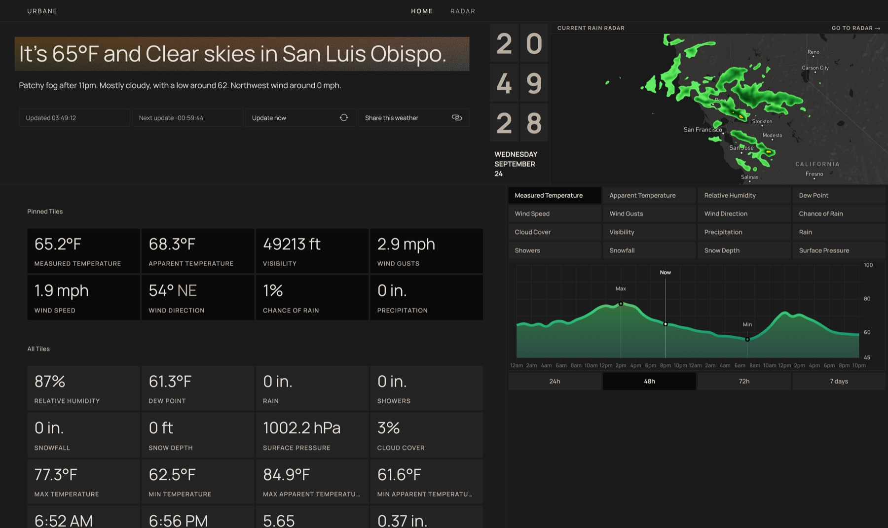
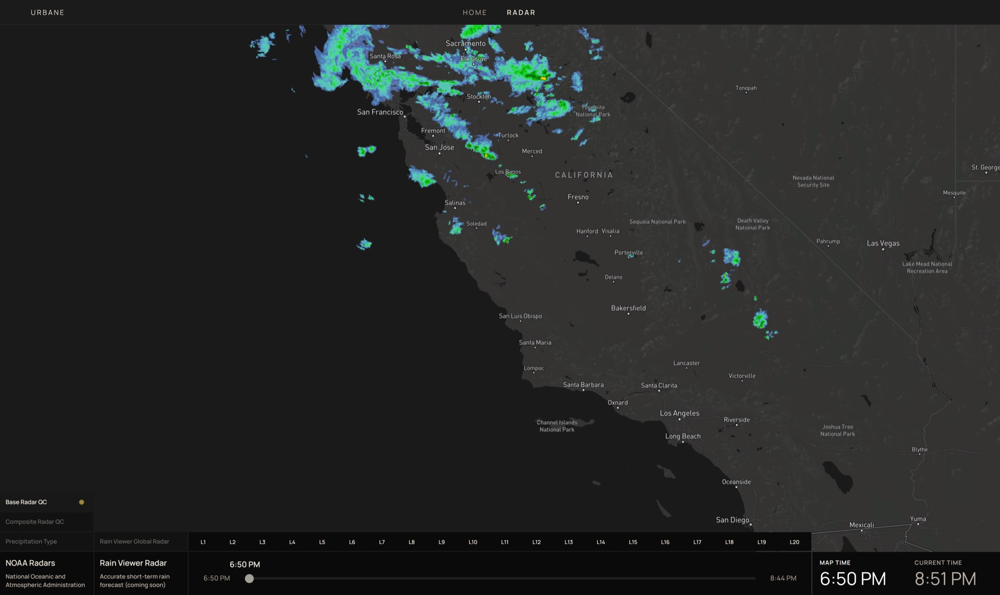

Case study · 01
Urbane Weather
Weather reporting delivered with purpose and cleanliness, from city-scale forecasts to animated NOAA radar.

The problem
Most weather products make users choose between a quick, simplified forecast and a dense professional tool. Urbane explores a third path: preserve granular data while making it calm, legible, and personal.
The product needed to move smoothly between location discovery, current conditions, long-range charts, and a data-heavy radar experience without feeling like four unrelated applications.
Granular weather data can still feel quiet.
My contribution
I designed and developed the product end to end: visual system, responsive dashboard, weather visualization, Mapbox integration, radar controls, and deployment.
- Built a customizable CSS Grid dashboard for pinned weather tiles.
- Connected NOAA WMS radar data to animated Mapbox tile layers.
- Created multi-range Chart.js visualizations for forecast trends.
- Generated dynamic social metadata with Vercel edge functions.


Radar system
The radar queries NOAA’s GetCapabilities service, parses the XML response, and transforms temporal datasets into Mapbox tile layers. Custom controls let users scrub through time or play the sequence as an animation while layers are selectively rendered.
Reflection
Urbane became an exercise in balancing information density with restraint. The strongest interactions are not decorative; they give users control over scale, timeframe, and priority while the visual system stays out of the way.
Next project · 02
Wisconsin DOR
Have a project in mind?